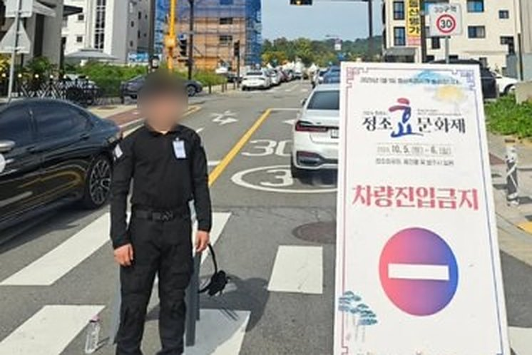

콘서트, 축제, 총회처럼 사람이 많이 모이는 현장의 출입 통제와 동선 관리, VIP 경호를 맡습니다. 행사 전에 위험 요소를 점검하고 구역별 배치와 비상 연락 체계를 미리 짠 뒤 현장에 들어갑니다.
맡는 일
| 분야 | 내용 |
|---|---|
| 행사 경호 | 대규모 행사의 질서 유지, 무대 앞 구역 통제, VIP 보호 |
| VIP 의전·신변 보호 | 시간과 동선을 미리 분석한 맞춤 수행, 공항 영접 |
| 보안·경비 | 주요 시설과 행사장의 출입 통제, 상시 보안 유지 |
이런 행사에 좋아요
- 콘서트·공연
- 축제·박람회
- 총회·기념식
- 전시회·브랜드 행사
- 스포츠 이벤트
진행 순서
- 상담: 행사 목적, 장소, 인원, 위험 요소 확인
- 위험 평가와 보안 계획: 현장 사전 조사, 상황별 대응 매뉴얼
- 인력 배치와 장비 준비: 역할별 편성, 무전기 등 통신 장비
- 사전 리허설과 브리핑: 동선 점검, 역할별 브리핑, 비상 연락 체계 구축
- 현장 운영: 실시간 상황 관리와 돌발 위험 대응
- 사후 보고: 운영 결과 브리핑과 개선 사항 정리
비상 상황 대비
- 화재, 폭력 사태, VIP 위협 등 시나리오별 대응 매뉴얼
- 현장 팀, 본부, 경찰·소방으로 이어지는 비상 연락망
- 무전기, 구급 장비, 대피 경로 사전 점검
인력과 교육
무도 유단자와 경호 자격 보유자 중심으로 인력을 구성하고, 폭행 대응·성폭력 예방·구급법 교육을 정기적으로 합니다.
자주 묻는 질문
몇 명이 필요한지 모르겠어요.
행사장 배치도와 예상 인원을 주시면 구역별 배치안과 견적을 먼저 보내드립니다.
1천 명 이상 모이는 행사도 맡나요?
맡습니다. 관람객이 많은 공연·축제는 관할 지자체에 안전 계획을 내야 하는 경우가 있어, 준비 단계부터 함께 확인합니다.
진행요원과 같이 맡길 수 있나요?
가능합니다. 안내·등록 같은 진행 인력과 경호 인력을 함께 구성합니다.